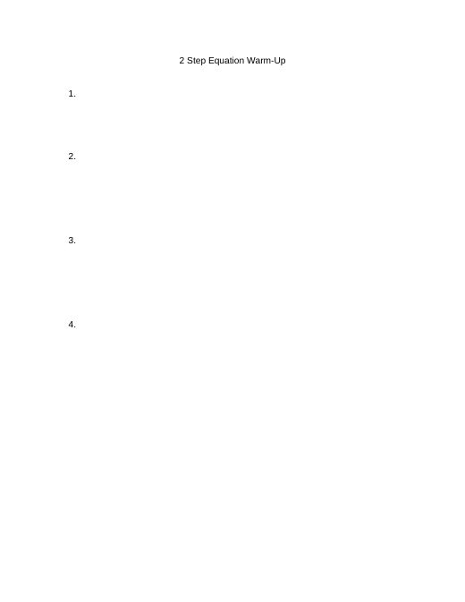

Two-Step Equations in Small Groups
B3_10-5_6LessonPlan.docx
Also in: Block 3 Math/Week 6/Lesson Plan
PA Standards
CC.2.2.7.EE.B.4 (foundational skill per IEP goals): Solve real-life and mathematical problems using numerical and algebraic equations, including one-step and two-step linear equations.
Essential Questions
- How do we solve one-step and two-step equations?
- How can working in a small group support our understanding of multi-step problems?
Objectives
- Students will solve one-step equations as a warm-up/review.
- Students will review vocabulary: one-step equation, two-step equation, inverse operations.
- Students will take guided notes on solving two-step equations.
- Students will practice solving one-step and two-step equations together as a class.
- Students will work in a small group to practice two-step equations, progressing from guided to independent practice.
Assessment
- One-step equation warm-up responses
- Vocabulary review responses
- Completed guided notes on two-step equations
- Completed whole-group 1-step/2-step practice sheet
- Small group practice accuracy and progress toward independent work
Differentiation
- Guided notes and practice sheet completed together as a class before students are released to small groups, scaffolding from supported to independent practice
- Small group breakout allows more individualized pacing and support
- Gradual release within small groups: students work together first, then transition to independent work, with help provided as needed
- Vocabulary reviewed again to reinforce retention from the prior lesson
Classroom Environment & Routines
- Visual schedule displayed showing today's activities
- Clear transition cues when moving from whole-class instruction into small groups
- Small groups supported by available staff to allow individualized help
- Consistent routine carried over from the prior two-step equations lesson
Activating Prior Knowledge
- (0-10 min) One-step equation warm-up.
- (10-15 min) Review vocabulary: one-step equation, two-step equation, inverse operations.
Materials Needed
- One-step equation warm-up sheet
- Vocabulary review materials
- Two-step equation guided notes
- 1-step and 2-step equation practice sheet
- Small group practice materials/worksheets
- Pencils, calculators
Vocabulary
- One-step equation — review
- Two-step equation — review
- Inverse operations — review
Lesson Sequence
- (15-35 min) Work through two-step equation notes together as a class.
- (35-55 min) Complete a 1-step and 2-step equation practice sheet together as a class.
- (55-90 min) Break into two small groups to continue practicing two-step equations. Work together as a group at first, then transition students to working independently, providing help as needed.
Closure
- Collect any completed small group work.
- Briefly recap the steps for solving one-step and two-step equations.
Show the original document here
Materials from the same week


